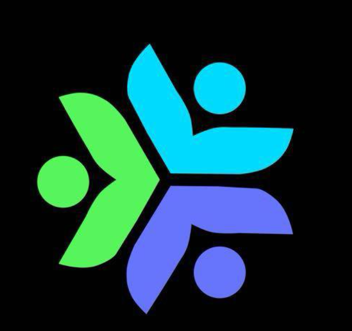

01
Build consistency
A fixed Problem of the Week creates a predictable weekly learning rhythm.

ROUNDCode is a member-only platform that turns weekly coding practice into a structured, transparent community programme. It combines competitive programming challenges, verified evaluation, ratings, leaderboards and developer profiles in one place for Round Table DTU.
A fixed Problem of the Week creates a predictable weekly learning rhythm.
Scores, ratings, streaks and heatmaps make participation and improvement visible.
Members submit code, complexity analysis and proof links; admins review fairly.
Profiles, posts, badges and standings encourage peer recognition and healthy competition.
Rating, rank, current challenge, live deadline timer, submission status and GitHub-style activity heatmap.
Monaco editor with syntax highlighting and support for C++, Python, Java and JavaScript.
Bio, branch, batch, skills, coding handles, GitHub/LinkedIn/portfolio links, projects and profile photo.
Rating history chart, current and longest streaks, achievements and badges such as First Step, Perfect 6 and Unstoppable.
Weekly POTW, monthly and all-time views with podium highlights, ranks and profile links.
Posts, notifications, rules page and member directory support communication around the programme.
| Problem | Maximum | What is evaluated |
|---|---|---|
| Easy | 1.0 point | Correct solution, code quality and fundamental approach |
| Medium | 2.0 points | Algorithmic reasoning and efficient implementation |
| Hard | 3.0 points | Advanced problem solving, optimality and proof |
Maximum weekly score: 6.0 points. Admins can award partial credit in 0.5-point increments.
| Area | Platform rule | Why it matters |
|---|---|---|
| Access | Only verified @dtu.ac.in addresses can enter registration; a personal email is used for login. | Restricts the platform to the intended society community. |
| Challenge | One active POTW at a time, containing exactly one Easy, one Medium and one Hard problem. | Gives everyone the same clear target. |
| Deadline | All three problems share a backend-enforced deadline; late submissions are rejected. | Preserves equal opportunity and weekly discipline. |
| Submission | All three answers are submitted together; after submission the entry is locked. | Prevents editing after the cutoff or after review starts. |
| Evaluation | Admins review code, time/space complexity and evidence; they may reopen with explicit authority. | Combines human feedback with controlled workflow. |
| Rating | New rating = max(0, previous rating + awarded score - penalty). Missing a POTW costs 2.0 points. | Rewards consistency while never creating negative ratings. |
| Governance | Super Admin controls admin roles and manual rating changes; important actions create audit logs. | Provides accountability and protects standings. |
The platform is designed to grow from a society-level coding community into a broader, interactive technology learning ecosystem.
Allow members to compile and execute code inside ROUNDCode with test cases, output validation and safe sandboxing, reducing the need for external platforms.
Expand access beyond Round Table DTU to departments, clubs and the wider college community with stronger scalability, multi-organisation support and larger data capacity.
Introduce timed, real-time contests with live rankings, contest rooms, automatic evaluation and post-contest performance analysis.
Match members with comparable ratings for head-to-head coding rounds, friendly competition and skill-based practice.
Extend learning tracks to web development, app development, machine learning, cybersecurity, databases, cloud and other technical domains.
Add personalised learning paths, topic-wise progress, recommended challenges, hints, code explanations and an AI mentor for guided improvement.